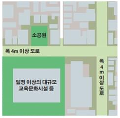

건축물 지진동피해 위험도 평가기준
-
행정구역간의 지진피해를 비교하여 상대적으로 위험한 지역을 선정하기 위해 최종 평가결과는 건축물 피해율을 토대로 대상 행정구역들을 5단계 위험도 등급으로 분류하였다. 이는 전체 연면적대비 반파 이상 피해율 5%이상 발생시 5등급 위험도에 해당하며, 건축물 지진동피해 위험도 환산점수는 식 (1)과 같다.
- 식 (1)
- 건축물 피해 위험도 평가지수 = 100 - 8 × (연면적 기준 반파위험도)
- 1등급 90 ≤ 건축물 지진동 피해위험도 환산점수 ≤ 100
- 2등급 80 ≤ 건축물 지진동 피해위험도 환산점수 ≤ 89
- 3등급 70 ≤ 건축물 지진동 피해위험도 환산점수 ≤ 79
- 4등급 60 ≤ 건축물 지진동 피해위험도 환산점수 ≤ 69
- 5등급 건축물 지진동 피해위험도 환산점수 ≺ 60
-
연면적 기준 반파위험도는 반파 이상의 피해연면적 백분율을 의미하며 식 (2)와 같이 반파이상 피해연면적을 전체 연면적으로 나누어 산정한다.
- 식 (2)
- 식 (3)
여기서, 는 행정구역 내 번째 건축물 구조형식의 이고, 는 번째 건축물 구조형식의 구성비이며, 는 행정구역 내 건축물의 총 연면적이다.
건축물의 내화구조유형 분류 및 클러스터 구성
- 지역 특성을 반영한 지진화재위험도 추정 및 지역 특성에 적합한 대비방안 제시를 위하여, 클러스터 기반 정적 화재 확산 해석법과 국내 건축물 관련 데이터베이스를 연계한 지진화재평가방법론을 적용하여 평가
- 지진화재위험도 평가에 활용되는 클러스터 구성을 위하여, 건축물대장의 데이터(사용승인일, 층수, 용도, 구조재료 그리고 연면적)를 고려하여 건축물의 내화구조유형 분류
- 다만, 기구축된 건축물 관련 데이터베이스 중 건축물의 내화구조유형을 분류하고 있지 않으므로, 건축법 시행령 제56조 내화구조 개정 이력 정보와 건축물대장의 데이터를 바탕으로 건축물의 내화구조유형을 분류하는 방법론 개발
- 여기서, 건축물대장의 데이터가 부분적으로 누락되어 완전하지 않으므로, 완전한 데이터 확보를 위해 데이터 역추적 방법론을 개발하였으며, 이를 바탕으로 누락률 0%인 건축물대장 확보 가능
- 건축물대장의 데이터와 내화구조유형 분류 방법론을 활용하여 건축물의 내화구조유형을 분류하고, 이에 따른 화재확산거리와 건축물간 인접거리의 비교를 통해 내화특성이 유사한 건축물을 그룹화하여 클러스터 구성
지역단위 출화건수 및 지진화재위험도 평가
- 최대지반가속도(PGA)와 건축물의 연면적 정보를 활용하여 지역단위의 출화건수 추정
- 클러스터 단위의 평균소실율을 활용하여 지진화재에 의한 지역단위의 소실율(소실된 연면적의 비율) 산정
- 지역 특성을 반영한 지진화재위험도 평가를 위하여, 지역단위의 건축물의 내화구조유형(목조, 내화조) 구성 비율, 밀집도 그리고 소실율을 활용하여
𝐼𝑅 그리고 𝐼𝑇를 계산하고, 이를 활용하여 지역단위 지진화재위험도 비교- 𝐼𝑅 : 내화조 중심 지역 특성 반영 소실율
- 𝐼𝑇 : 목조 중심 지역특성 반영 소실율
평가지수 산정
- 행정구역별 건축물의 내화구조유형 중 내화조 그리고 목조 구성 비율과 밀집도 그리고 소실율을 활용하여 지진화재위험도 평가지표 산정
내화조중심 지역 특성 반영 소실율 = 𝐼𝑅 = 1 / (연면적 기준 반파위험도)
밀집도 × 소실율
내화조 구성 비율
목조중심 지역 특성 반영 소실율 = 𝐼𝑇 = 1 / 밀집도 × 목조 구성 비율 × 소실율
방재역량 평가
- PGA와 건축물의 연면적을 고려한 지역단위 출화건수 예측
- 지역 특성(건축물 내화구조유형 구성 비율 그리고 밀집도)을 반영한 지진화재위험도 평가 및 위험지역 선정
- 지역 특성을 고려하여 지진화재에 대한 합리적인 대비방안 평가
- 밀집도가 높은 지역: 화재 발생 시 신속한 소방 및 구급활동을 위한 소방차량 등의 접근성 평가
- 목조 구성 비율이 높은 지역: 긴급 소방시설 등의 설치 필요여부 평가
※ 목조 특성상 화재에 의한 위험성 및 확산 가능성이 높음을 고려
복구역량도 평가지수
- 개념: 지진에 의한 직접적인 피해액(건축물의 신축 혹은 보수비용)을 지역의 복구능력을 보정한 값
복구역량도 = 100 -
건물가치의 손실비율
지역의 사회경제적 복구능력
(%)
건물가치 손실비율 산정
- 건축물 대장 → 건물별 구조형식, 용도, 내진설계여부 판정 → 취약도 함수를 통한 건물별 손상확률 산정
- 손상확률별 감가율에 용도별 건축단가 (한국부동산원 자료)를 고려하여 피해액 산정
- 손실비율 = 피해액의 합 / 건물 가치의 합
지역의 사회경제적 복구능력 산정
- 복구능력과 관련된 지역별 통계데이터 확보 : 지역내 총생산, 경제활동참가율, 노후주택비율 등
- 지역간 상대비교에 근거한 복구능력지수 산정

| 번호 | 대표 건축물 | 건물 단가 | 전기 설비 | 위생 설비 | 냉난방 설비 |
|---|---|---|---|---|---|
| 1 | 일반주택 | 209 | 24 | 84.5 | 100.5 |
| 2 | 고급주택 | 271 | 24 | 127.5 | 119.5 |
| 3 | 다가구주택 | 209 | 24 | 84.5 | 100.5 |
| 4 | 다중주택 | 209 | 24 | 84.5 | 100.5 |
| 5 | 아파트 | 227.5 | 61 | 94 | 72.5 |
| 6 | 연립주택 | 162.5 | 24 | 70.5 | 68 |
| 7 | 다세대주택 | 162.5 | 24 | 70.5 | 68 |
| ⋯ | ⋯ | ⋯ | ⋯ | ⋯ | ⋯ |
| 45 | 유치원 | 279 | 30 | 75.5 | 173.5 |
| 번호 | 통계데이터 |
|---|---|
| 1 | 경제활동참가율 |
| 2 | 등록 장애인 수 |
| 3 | 지역내총생산(GRDP) |
| 4 | 1인 가구비율 |
| 5 | 독거노인 가구비율 |
| 6 | 무주택 가구비율 |
| 7 | 노후 주택비율 |
| 8 | 재정자립도 |
| 9 | 재정자주도 |
대피안전도 평가지수
- 개념: 지진에 의한 직접적인 피해액(건축물의 신축 혹은 보수비용)을 지역의 복구능력을 보정한 값
복구역량도 = 100 -대피자 희망자 중 미수용인원 대피시설의 수용능력(%)
- 확보된 옥외대피소 면적(수용능력)의 적절성 판단을 위해 활용가능
긴급대피자 추정절차 건물가치 손실비율 산정
- 긴급대피자 = 주택피해로 인한 대피자 + 심리적 불안에 의한 대피자
- 주책피해로 인한 대피자 = 전체인구 × (전파주택면적 + 반파주택면적 × 0.5) ÷ 전체주택면적
- 심리적불안에 의한 대피자 = 0.2g이상의 가속도가 작용한 지역의 주택면적 ÷ 전체주택면적 × 0.0053
대피시설의 수용능력
- 수용능력 = 대피시설의 면적 ÷ 0.825㎡ (민방위 기준 1인당 점유면적)
활동 공간 확보율
- 활동 공간 확보율(α)은 동경도 도시정비국에서 제안한 지표인 활동 유효 공간 부족률을 안전도 관점에서 평가한 지표
- 활동 유효 공간 부족률은 폭 4m 이상의 도로 등에 해당하는 긴급 대응 활동을 용이하게 할 수 있는 면적 대비 그렇지 않은 공간의 비율로 평가
- 지역 내 긴급 대응 공간으로 확보된 면적의 지역 전체 면적에 대한 비율로 활동 공간 확보율 평가 가능

활동 공간 확보율이 높은 예
활동 공간 확보율이 낮은 예
지역 도로망 접근 계수
- 지역 도로망 접근 계수(β)는 동경도 도시정비국에서 제안한 지표인 도로 네트워크 밀도 부족률을 안전도 관점에서 평가한 지표
- 폭 12m 이상의 도로로 연결되는 폭 6m 이상의 도로에 접근할 수 있는 도로 네트워크의 밀도를 평가
- 지역 내 여러 재해지로부터 지역 수준의 구호지점까지의 평균 도달 시간으로 지역 도로망 접근 계수 평가 가능
지역 도로망 접근 계수가 높은 예
지역 도로망 접근 계수가 낮은 예
광역 도로망 접근 계수
- 광역 도로망 접근 계수(γ)는 광역 단위 도로망을 이용하여 지역 간 접근성을 평가한 지표
- 네트워크 중심성 평가 지표를 도로망에 적용하여 광역 도로망 접근 계수 평가 가능
(https://plugins.qgis.org/planet/user/4/tag/openstreetmap/)
긴급 대응 도로·공간 확보 계수(ER)
- 지진 발생 직후 긴급 대응 활동의 수월한 정도를 재해 시 대응 공간의 확보 정도와 도로망 접근 관점에서 평가한 지수
- 활동 공간 확보율, 지역 도로망 접근 계수, 그리고 광역 도로망 접근 계수의 기하평균으로 긴급 대응 도로·공간 확보 계수 산출 가능
건축물 피해의 결정
- 건축물 대장 정보(구조, 규모, 용도)를 참고하여 각 건축물을 대표성을 갖는 구조유형으로 분류하고 건설연도와 해당 법령에 따라 내진설계 여부를 판단
- 각 건축물별로 해당되는 건축물 유형의 지진취약도함수를 이용하여 지표 지반가속도에 상응하는 피해율 산정(지진취약도함수: 지진동의 세기 증가에 따른 손상확률을 나타내는 확률분포함수).
여기서는 지진피해 반파(수리하지 않고는 사용할 수 없는 수준의 피해) 이상의 손상을 기준으로 함
방재역량 평가
- 주요 방재거점시설(소방서, 병원, 임시거주시설)의 지진피해를 내진보강여부 및 내진등급을 반영하여 평가
- 정상운영 가능한 시설(소파 이하의 피해)을 집계하여 가용 소방차량 수, 병상 수, 임시거주시설 수용인원을 산출
- 가용 소방차량 수와 건물 피해, 용도, 내화구조, 밀집도 등을 고려한 예상 화재 건수를 비교 평가
- 가용 병원 병상 수 및 임시거주시설 수용인원을 각각 건축물 피해율에 대응하는 부상자 수 및 이재민 수와 비교 평가